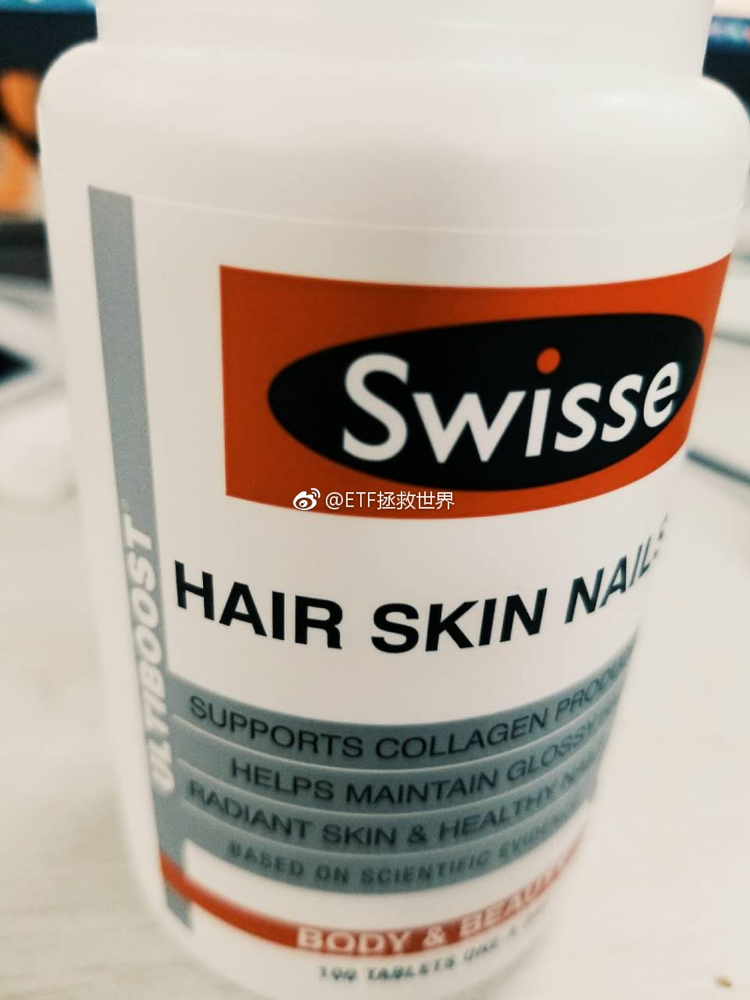

@ETF拯救世界:
托大家的福，刚知道什么是中年人的四宝。
保温杯？有时候我出门确实带。不过不是温水，我一直不喜欢喝温水。如果长时间出去玩，我会往保温杯里放不少冰水，或者冰的三得利乌龙茶。如果是长途开车，会带上车载冰箱放冰水……
啤酒肚也还没有。也希望这辈子都别有。
手串？我是不理解为什么会带这个。20左右年轻的时候会带上女朋友送的手链，再大一点戴过卡西欧的飞行员电子表。前几年戴过小米的运动手环和佳明的运动表。现在就戴一块机械表。
茶？一般不喝。喝就是上面说的三得利乌龙茶。方便，不用泡。其它饮料，只喝水和零度可乐。
保健品，现在有时候想起来会吃一片这个……
所以总结一下，是不是还没老！
保温杯？有时候我出门确实带。不过不是温水，我一直不喜欢喝温水。如果长时间出去玩，我会往保温杯里放不少冰水，或者冰的三得利乌龙茶。如果是长途开车，会带上车载冰箱放冰水……
啤酒肚也还没有。也希望这辈子都别有。
手串？我是不理解为什么会带这个。20左右年轻的时候会带上女朋友送的手链，再大一点戴过卡西欧的飞行员电子表。前几年戴过小米的运动手环和佳明的运动表。现在就戴一块机械表。
茶？一般不喝。喝就是上面说的三得利乌龙茶。方便，不用泡。其它饮料，只喝水和零度可乐。
保健品，现在有时候想起来会吃一片这个……
所以总结一下，是不是还没老！
- 